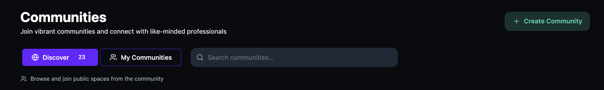
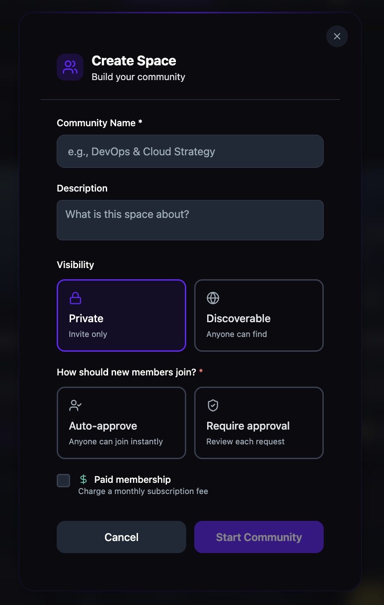

Create a community
Launch a community space for any group or topic. Set the name, description, visibility, and membership rules. You can also enable paid membership with monthly or yearly billing.
Open the Communities page
- Click Communities in the main navigation.
- Click + Create Community in the top-right corner.

Set up your community
- Enter a Community Name. This is required.
- Optionally enter a Description to explain what your community is about.
- Under Visibility, select one:
- Private — invite only. Only people you invite can find and join.
- Discoverable — anyone can find your community and request to join.
- Under How should new members join?, select one:
- Auto-approve — anyone can join instantly.
- Require approval — you review each request before members are added.

Add paid membership (optional)
- Check the Paid membership checkbox to charge a monthly subscription fee.
- Enter the Monthly Price in USD.
- Optionally check Offer yearly billing to give members a discounted annual option. Enter the Yearly Price in USD. The platform automatically displays the savings percentage compared to paying monthly.


Start your community
- Review your settings.
- Click Start Community.
Tip: You can change your community settings at any time after creation, including visibility, membership rules, and pricing.